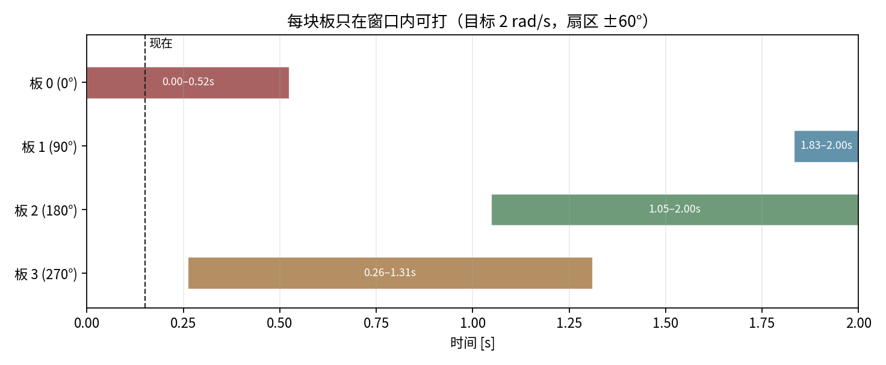

Lesson 0007 · 决策层
0006 解决了“什么时候打、打哪里”；这一节解决“打哪块、先打哪块”。多块板同时转，选错板会把时间花在等窗口上。
p_hit / t_aim / t_window；写出一个可解释的选板分数；解释为什么最近板不一定最好；说出三套代码各自用什么启发式、忽略了什么。
目标在转，四块板的方位角跟着转。云台的可用扇区有限（sp 用 ±60°），所以每块板只在某个时间段里“不用大转云台就能打”：

assets/make_selection_figure.py 生成。这张图只固定了云台角度；真实系统里云台会转，窗口会跟着变。但它已经说明一件事：“现在离得最近”与“下一步最值得打”不是同一个问题。
| 指标 | 含义 | 怎么估 |
|---|---|---|
p_hit | 这一枪命中的概率 | 角尺寸 α≈w/d 与总不确定度（预测 + 弹道 + 云台）比较；再乘可见性 |
t_aim | 云台从当前角到开火角的时间 | Δangle/ω_max 加上加速/稳定时间；离得越远越久 |
t_window | 这块板还能留在可打扇区里的时间 | 由预测的 θ(t), ω 和扇区边界算；转得快窗口短 |
Δangle | 需要转多少角度 | “要不要动”的直接度量 |
visible | 是否被遮挡、是否正面朝枪口 | 检测置信度、板法向与视线夹角 |
p_hit 不需要算得很精。一个够用的近似：把角度误差看成零均值高斯，标准差 σ 由预测协方差、弹道散布、云台跟踪误差合成；装甲板角宽 α，则
p_hit ≈ P(|e| < α/2) = erf( α / (2√2 σ) )
如果 σ 比 α/2 小很多，p_hit 接近 1；如果 σ 更大，命中率迅速掉。这个式子把“难不难打”变成了一个可比较的数。
最直接的目标是“单位时间打中最多”。对单块板，一个可解释的分数是：
score_i = p_hit_i / (t_aim_i + t_settle) 约束： p_hit_i ≥ p_min # 太难的板不打 t_aim_i ≤ t_window_i # 转过去时板已经跑了，不打
也可以写成“命中率减去时间惩罚”：
score_i = p_hit_i - λ · t_aim_i
λ 就是“速度 vs 难易”的权重。它不是固定的：残局/少弹药时更看重 p_hit，λ 小；开阔地/多目标时更看重节奏，λ 大。工程上通常先定一个最小命中概率门限，再在可行板里选时间最短的；这比直接调 λ 更稳。
1+h 倍（例如 h=0.2）才切换。否则云台会在两块板之间来回摆，谁也打不准。
| 项目 | 选板逻辑 | 它解决了什么 | 它没解决什么 |
|---|---|---|---|
| sp | choose_aim_point：60° 扇区内选板，lock_id 锁定；小陀螺时选“好打”的板 | 避免大角度换板；锁定后稳定 | 没有显式 p_hit/t_window 代价；阈值靠调 |
| wuhan | FSM：单板 / 双板 / 中心 / 对板，按状态切换 | 不同战场态势用不同策略；和 MPC 配合 | 状态转移是手写的；没有单位时间命中率优化 |
| SHtech | 按 |ω| 分 0.7/2.7 三档；Planner.cpp:109 四种策略，:472 最近板 | 低速/高速用不同模型和策略；工程上稳 | “最近板”不是“最优板”；策略切换靠阈值 |
三套代码都是启发式，不是调度器。它们回答的是“现在这块板能不能打”，没有显式回答“接下来 1 秒打哪几块最划算”。这正是可以继续做的方向。
candidates = 预测每块板在 t_hit 的位姿
for each plate:
visible = 遮挡/朝向检查
p_hit = f(角尺寸, σ_pred, σ_ballistic)
t_aim = gimbal_time(current_angle, aim_angle)
t_window= time_until_leave_sector(θ(t), ω)
feasible = { i | visible, p_hit ≥ p_min, t_aim ≤ t_window }
if feasible is empty:
hold / 回中心 / 等下一块
else:
choose argmax p_hit / (t_aim + t_settle)
if locked and new_score < (1+h) * locked_score:
keep locked
fire when 0006 的开火门控通过
这条流程把前面三节接起来：t_hit 的位姿来自 0005，t_aim/开火门控来自 0006，p_hit/t_window 是这一层新增的。
假设云台最大 180°/s，t_settle=0.1 s，三块候选板：
| 板 | p_hit | Δangle | t_aim | t_window | score=p_hit/(t_aim+t_settle) |
|---|---|---|---|---|---|
| A | 0.80 | 10° | 0.06 s | 0.37 s | 5.0 |
| B | 0.70 | 80° | 0.44 s | 0.90 s | 1.30 |
| C | 0.90 | 55° | 0.31 s | 0.20 s | 不可行（t_aim > t_window） |
A 的分数最高，选 A；C 虽然 p_hit 最高，但转过去时窗口已经关了，不能选。这个例子说明：命中概率最高的板，不一定是单位时间命中数最高的板。
如果这一局必须命中（比如残局），可以把门限 p_min 调高，或者把分数改成 p_hit - λ t_aim 并减小 λ；如果要抢节奏，就增大 λ 或直接用 p_hit/t_aim。没有一套权重适合所有局面，关键是让权重有明确的战术含义，而不是拍脑袋。
1. 离云台最近的板，为什么不一定先打？
2. t_aim > t_window 说明什么？
3. 选板加滞回，主要是为了什么？